Characters
Every character you can draft in Slayer Squad: 53 fighters and 5 back-pocket helpers. Tap one for their stats, specials, synergies and how to win with them.
Play free in your browserThe main crew
Tanjiro, Nezuko and the friends they fight beside.
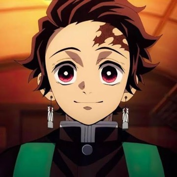
Tanjiro Kamado
5 pts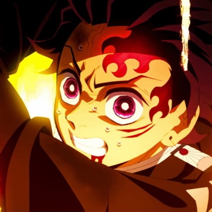
Tanjiro Kamado (Mark)
9 pts · Mark ✦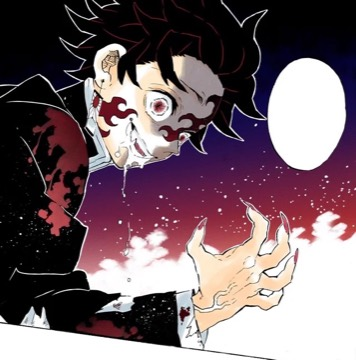
Tanjiro Kamado (Demon King)
17 pts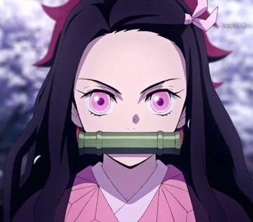
Nezuko Kamado
4 pts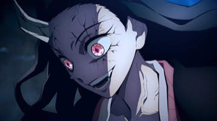
Nezuko Kamado (Awakened)
9 pts- Zenitsu Agatsuma
4 pts 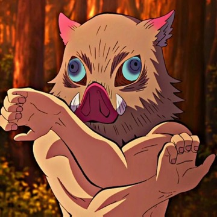
Inosuke Hashibira
4 pts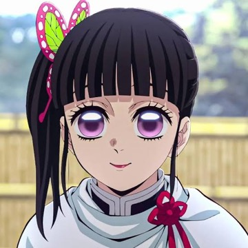
Kanao Tsuyuri
4 pts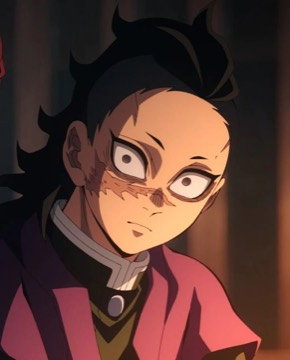
Genya Shinazugawa
4 pts
The Hashira
Two Hashira on a team get +1 PWR each; Kagaya gives them +1 DEF; Marks recharge faster and two Marks give +1 SPD.
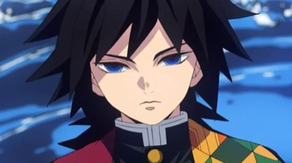
Giyu Tomioka
8 pts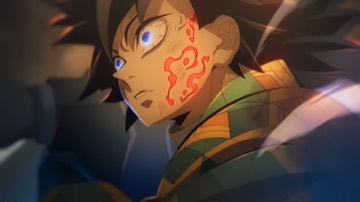
Giyu Tomioka (Mark)
10 pts · Mark ✦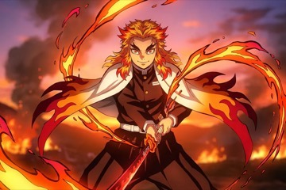
Kyojuro Rengoku
7 pts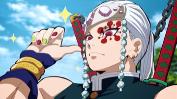
Tengen Uzui
6 pts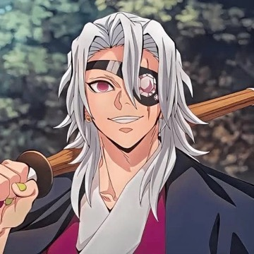
Tengen Uzui (Retired)
4 pts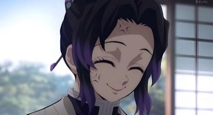
Shinobu Kocho
5 pts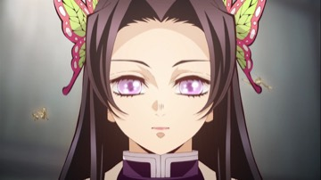
Kanae Kocho
5 pts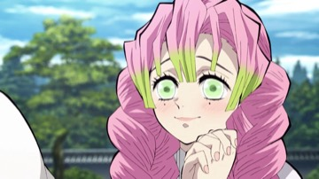
Mitsuri Kanroji
5 pts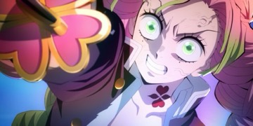
Mitsuri Kanroji (Mark)
8 pts · Mark ✦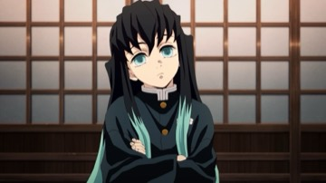
Muichiro Tokito
6 pts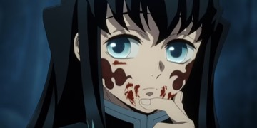
Muichiro Tokito (Mark)
10 pts · Mark ✦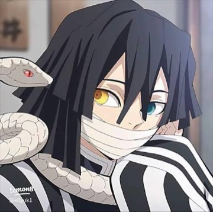
Obanai Iguro
5 pts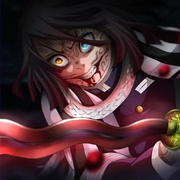
Obanai Iguro (Mark)
8 pts · Mark ✦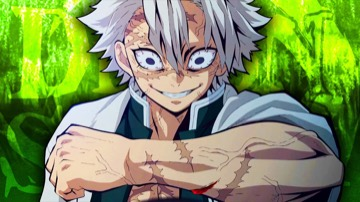
Sanemi Shinazugawa
7 pts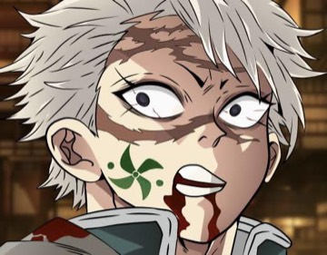
Sanemi Shinazugawa (Mark)
11 pts · Mark ✦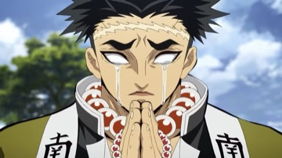
Gyomei Himejima
8 pts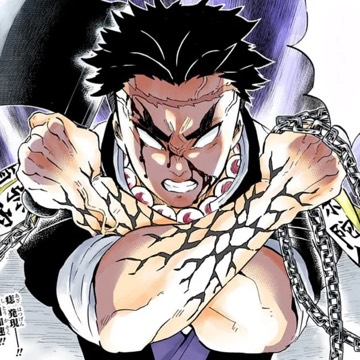
Gyomei Himejima (Mark)
12 pts · Mark ✦
Allies and legends
Trainers, healers, the Corps Master and the strongest swordsman who ever lived.
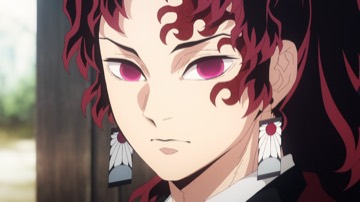
Yoriichi Tsugikuni
18 pts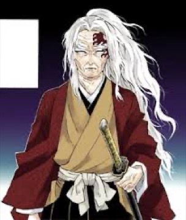
Yoriichi (Age 85)
17 pts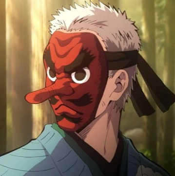
Sakonji Urokodaki
4 pts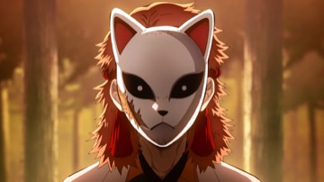
Sabito
4 pts- Murata
2 pts 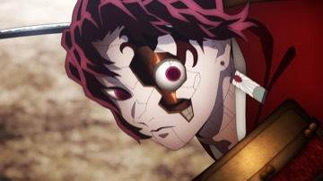
Yoriichi Type Zero
4 pts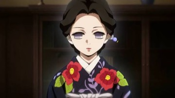
Tamayo
3 pts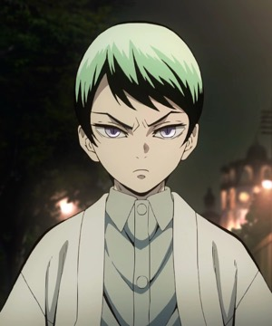
Yushiro
3 pts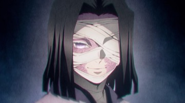
Kagaya Ubuyashiki
2 pts
Lesser demons
Cheap demons. Most are best as the second card next to a big one.
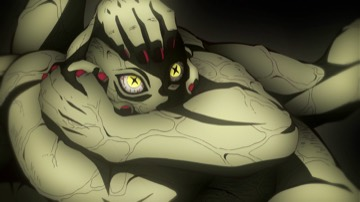
Hand Demon
2 pts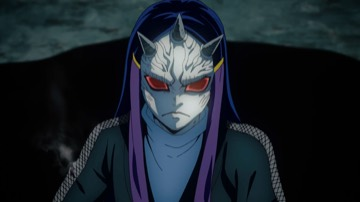
Swamp Demon
3 pts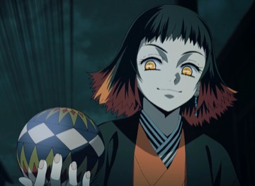
Susamaru
3 pts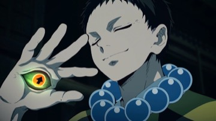
Yahaba
4 pts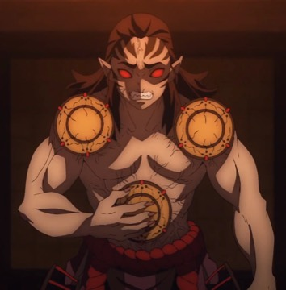
Kyogai
3 pts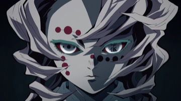
Rui
4 pts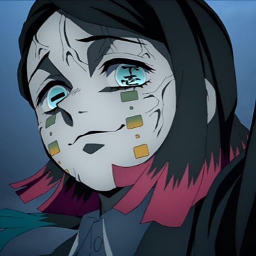
Enmu
4 pts
Upper Moons and Muzan
Two Upper Moons on a team get +1 regeneration; Muzan with another demon gives the demons +1 PWR. From round 10 the sun burns every demon and stops their regeneration.
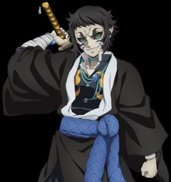
Kaigaku
5 pts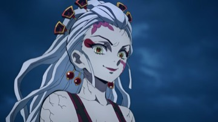
Daki
6 pts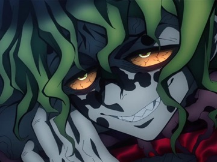
Gyutaro
8 pts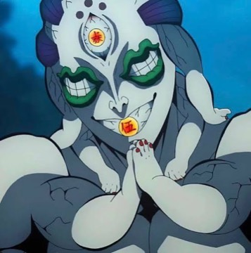
Gyokko
6 pts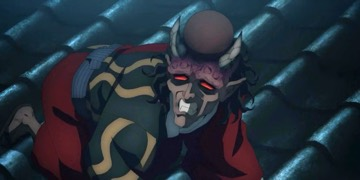
Hantengu
9 pts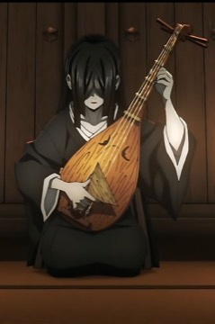
Nakime
4 pts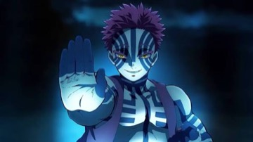
Akaza
10 pts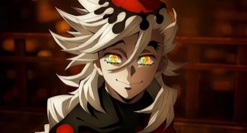
Doma
11 pts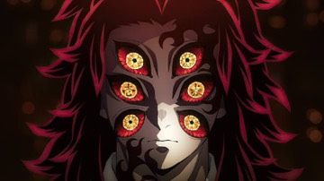
Kokushibo
15 pts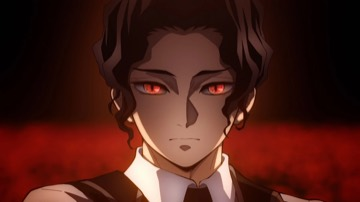
Muzan Kibutsuji
16 pts- Muzan Kibutsuji (Final Form)
18 pts
Back-pocket helpers
1 pt each and no fighter slot: use one once, on any round, and it acts first.